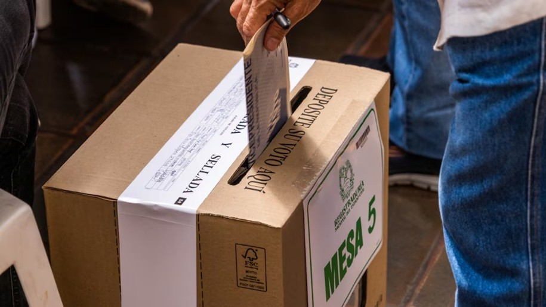
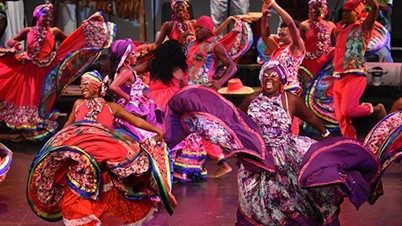
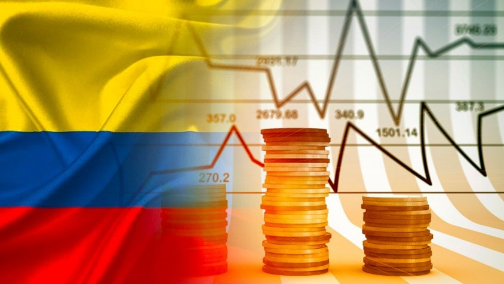

NOTICIAS COLOMBIA

Bienvenido a este espacio dedicado a la actualidad de Colombia, donde encontrarás información confiable, actualizada y relevante sobre los acontecimientos más importantes del país. Nuestro objetivo es mantenerte informado con noticias de última hora, reportajes, análisis y cobertura en profundidad de temas clave como política, economía, sociedad, cultura y tecnología. Aquí reunimos los hechos que marcan la agenda nacional, explicados de manera clara y objetiva, para que puedas comprender mejor lo que ocurre en Colombia y cómo impacta en la vida de sus ciudadanos. Desde eventos locales hasta noticias de alcance nacional, te ofrecemos una visión completa y al día. Mantente conectado con Colombia y accede a contenido informativo pensado para mantenerte siempre un paso adelante.
ACTUALIDAD: colombia avanza hacia eleciones presidenciales 2026

Colombia se encuentra en una etapa clave de cara a las elecciones presidenciales de 2026, un proceso que ha generado gran expectativa a nivel nacional. Diferentes candidatos han recorrido el país presentando sus propuestas enfocadas en temas como seguridad, economía, salud y educación. Los debates políticos han aumentado en intensidad, reflejando la diversidad de opiniones entre los ciudadanos. Analistas consideran que estas elecciones serán decisivas para el rumbo del país, especialmente en un contexto marcado por desafíos sociales y económicos.
CULTURA : colombia fortalece su diversidad cultural

Colombia continúa destacándose por su riqueza cultural, con una gran variedad de festivales, tradiciones y expresiones artísticas en todo el territorio. Eventos culturales se realizan constantemente, promoviendo la música, la danza, la gastronomía y el arte local. Estas actividades no solo fortalecen la identidad nacional, sino que también impulsan el turismo y generan oportunidades económicas para muchas comunidades. La diversidad cultural del país sigue siendo uno de sus mayores orgullos.
DEPORTE : colombia se prepara para competencias internacionales
En el ámbito deportivo, Colombia continúa preparándose para participar en importantes competencias internacionales. Equipos y atletas de distintas disciplinas intensifican sus entrenamientos con el objetivo de representar al país de la mejor manera. El fútbol sigue siendo uno de los deportes más seguidos, pero otras disciplinas también han ganado reconocimiento. La dedicación de los deportistas refleja el compromiso por alcanzar resultados destacados a nivel global.
ECONOMIA:crecimiento economico con desafios

La economía colombiana muestra signos de crecimiento moderado en 2026, aunque enfrenta varios desafíos importantes. Factores como la inflación, el desempleo y las decisiones del Banco de la República han generado debates sobre el rumbo económico del país. A pesar de esto, sectores como el comercio, el turismo y el transporte han mostrado avances positivos. El gobierno y diferentes actores económicos trabajan en estrategias para mantener la estabilidad y mejorar la calidad de vida de los ciudadanos